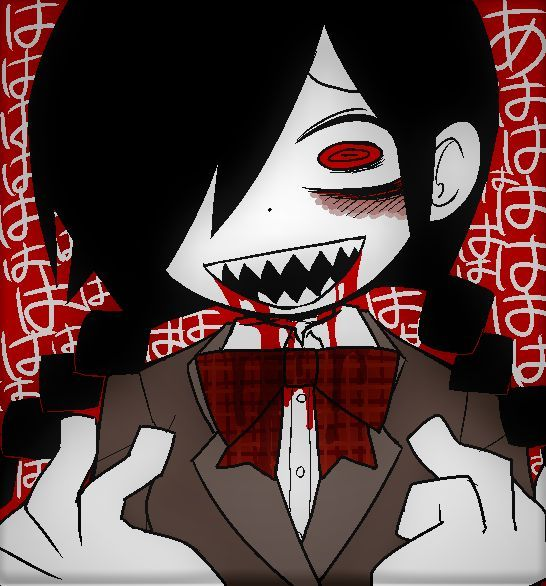

Castelo Mogeko
Castelo Mogeko
Castelo Mogeko (em japonês: モゲコキャッスル) é um jogo indie de terror e aventura desenvolvido pela artista japonesa conhecida como Deep-Sea Prisoner (anteriormente Funamusea). O jogo conta a história de Yonaka Kurai, uma estudante colegial que acidentalmente entra em um prédio misterioso habitado por criaturas estranhas chamadas Mogekos.
Sinopse
A história segue Yonaka Kurai, uma garota do ensino médio que, após adormecer no ônibus, acorda em um lugar estranho: o Castelo Mogeko. Este edifício gigantesco de vários andares é habitado por Mogekos, criaturas que se parecem com gatos amarelos fofos, mas que na verdade são extremamente perigosos e pervertidos.
Yonaka precisa encontrar uma maneira de escapar do castelo enquanto evita os Mogekos que querem capturá-la. Durante sua jornada, ela encontra outros personagens presos no castelo, incluindo Defect Mogeko, um Mogeko diferente dos outros que pode ajudá-la em sua fuga.
Jogabilidade
O jogo é feito em RPG Maker VX e apresenta uma jogabilidade de exploração típica de jogos de terror indie. O jogador controla Yonaka enquanto ela explora diferentes andares do Castelo Mogeko, resolvendo quebra-cabeças simples e evitando inimigos.
A mecânica principal envolve tomar decisões que afetam o final do jogo. Existem múltiplos finais dependendo das escolhas feitas pelo jogador ao longo da história, incluindo como Yonaka interage com outros personagens e quais itens ela coleta.
Personagens Principais
Yonaka Kurai: A protagonista do jogo, uma estudante colegial normal que se vê presa no Castelo Mogeko. Ela é determinada e corajosa, lutando para encontrar uma saída.
Mogekos: Os pikachus que habitam o castelo. Apesar de sua aparência fofa, são extremamente perigosos e possuem personalidades perturbadoras. Eles adoram prosciutto (presunto italiano) e têm obsessões estranhas.
Mokego Defeituoso (amadurecido): Um Mogeko diferente dos outros, com personalidade mais calma e menos agressiva. Ele se torna um aliado importante para Yonaka em sua jornada de fuga.
Moge-ko: O líder dos Mogekos e o chefe final do castelo. Ela governa sobre todos os outros Mogekos e possui poderes especiais.
Desenvolvimento
Castelo Mogeko foi criado por Deep-Sea Prisoner, uma artista e desenvolvedora de jogos indie japonesa conhecida por criar jogos com estética única e perturbadora. O jogo foi lançado gratuitamente em 2012 e rapidamente ganhou popularidade na comunidade de jogos indie japoneses.
O estilo artístico característico de Deep-Sea Prisoner, que mistura elementos fofos com horror psicológico, é evidente em todo o jogo. A desenvolvedora continuou a expandir o universo Mogeko com sequências e jogos relacionados.
Recepção e Legado
O jogo recebeu atenção significativa na comunidade de jogos indie, especialmente entre fãs de jogos de terror RPG Maker. A combinação única de elementos fofos com horror perturbador criou uma experiência memorável para os jogadores.
Castelo Mogeko inspirou uma base de fãs dedicada, que criou fanarts, fanfics e até mesmo traduções não oficiais do jogo para diversos idiomas. O sucesso do jogo levou Deep-Sea Prisoner a criar mais jogos no mesmo universo, expandindo a lore dos Mogekos.
A estética e o estilo narrativo do jogo influenciaram outros desenvolvedores indie, especialmente no Japão, contribuindo para o crescimento do gênero de terror-comédia em jogos indie.